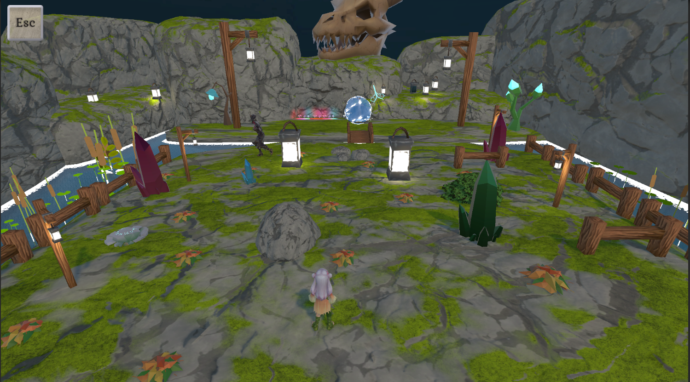
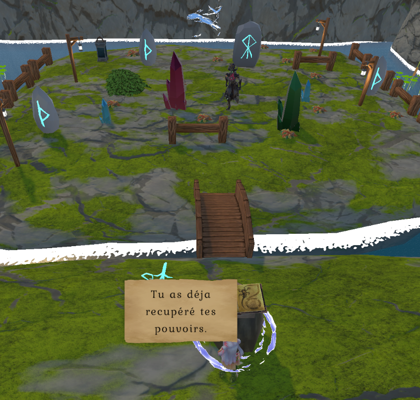
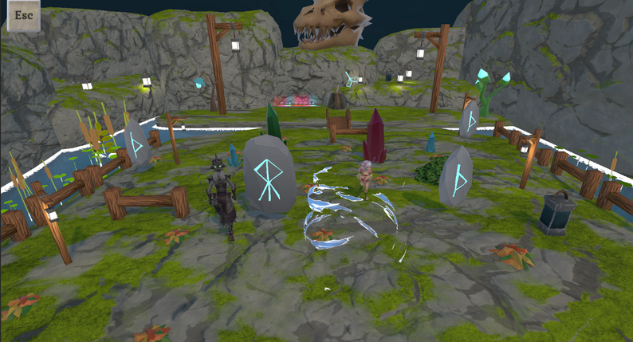
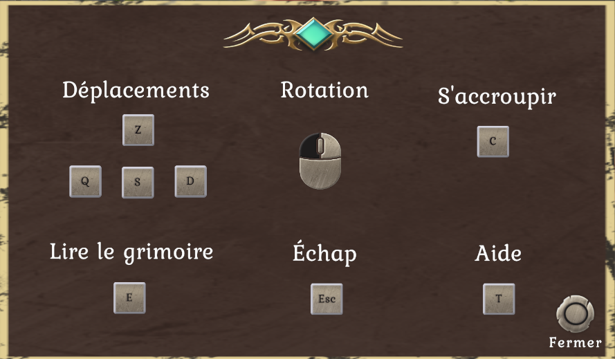

Gameplay
Commandes principales
- Z Q S D : se déplacer
- C : s’accroupir
- Souris : orienter la caméra
- E : lire le grimoire
- Échap : ouvrir ou fermer le menu
Projet universitaire 2026 · Unity · C#
Un jeu d’infiltration dans lequel une apprentie mage doit traverser une île montagneuse, récupérer ses pouvoirs et échapper à la patrouille d’une sorcière.

Le contexte
Le joueur incarne une apprentie mage coincée sur une île flottante. Privée de ses pouvoirs, elle doit atteindre un grimoire pour les récupérer, puis revenir à son point de départ en évitant la sorcière qui surveille les lieux.
Le parcours change et oblige à observer l’environnement, choisir ses cachettes et s’accroupir lorsque le passage est trop exposé.
Éléments visuels



Gameplay
Ma contribution
Environnement de production
Moteur utilisé pour créer l’île, les scènes, les obstacles et les mécaniques d’infiltration.
Langage utilisé pour programmer les contrôles, les interactions et les pouvoirs.
Environnement utilisé pour développer et déboguer les scripts du jeu.
À retenir pour la présentation
Stealth Mage met l’accent sur l’observation et l’adaptation : le joueur doit comprendre les trajectoires de la menace, exploiter le décor et modifier son approche lorsque le chemin change.